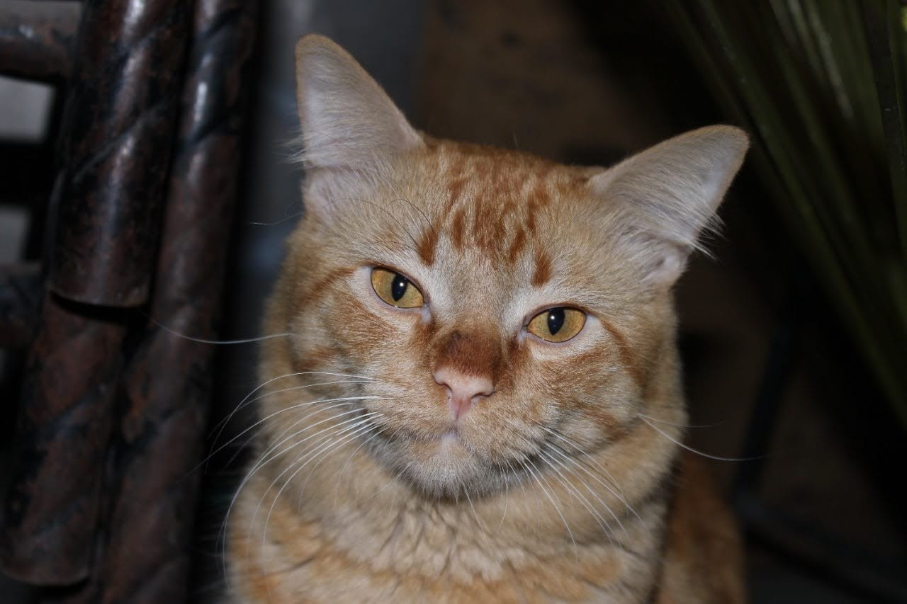

Animales favoritos
Periquito Australiano
Los periquitos son originarios de Australia y pertenecen a la familia de los loros. Estos pájaros habladores de plumaje colorido y pico curvo son unas de las mascotas favoritas en Europa. Aquí puedes encontrar datos interesantes sobre el origen y la reproducción de estas aves, así como consejos para una crianza adecuada. Sociable y hablador En su país de origen, Australia, los periquitos viven en enjambres de hasta 2000 pájaros. No es de extrañar que esta ave social, incluso en cautiverio, prefiera estar acompañada. Si estás pensando en comprar un periquito, deberías plantearte adquirir al menos dos ejemplares. Estos alegres pajaritos solo se sienten cómodos con sus semejantes, con quienes están en contacto constante. Su repertorio de sonidos y lenguaje corporal es extraordinario. Observarlos en el trato con otros periquitos es fascinante.
Colocar aquí el contenido de la nueva etiqueta sectionGatos
Los gatos son unos compañeros adorables y fascinantes que, junto a los perros, son las mascotas más comunes en los hogares. Su independencia y lealtad los convierten en la opción perfecta para aquellos que tienen un estilo de vida ocupado. Pero lo que quizás no sepas son los efectos positivos que tienen en nuestra salud. En este artículo, te revelaremos todos los beneficios de vivir con un gato en casa, desde su cariño y entretenimiento hasta su impacto terapéutico en nuestra salud. ¡Sigue leyendo para descubrir cómo un gato puede mejorar tu vida de varias maneras!
Compañía cariñosa e independiente: Los gatos son expertos en brindar amor y compañía a la par que disfrutan de su independencia. A diferencia de los perros, no requieren tanta atención constante, lo que los convierte en una excelente opción para personas con un estilo de vida ocupado. Puedes disfrutar de su cariño cuando lo desees y también respetar su necesidad de momentos a solas. Reducción del estrés y la ansiedad: La presencia de un gato en casa tiene un efecto terapéutico comprobado en nuestra salud mental. El simple acto de acariciar a un gato puede reducir los niveles de la hormona relacionada con el estrés, el cortisol, y proporcionar una sensación de calma y relajación. Además, los gatos pueden aliviar la tristeza, la soledad y la ansiedad, brindándonos consuelo y apoyo emocional.
